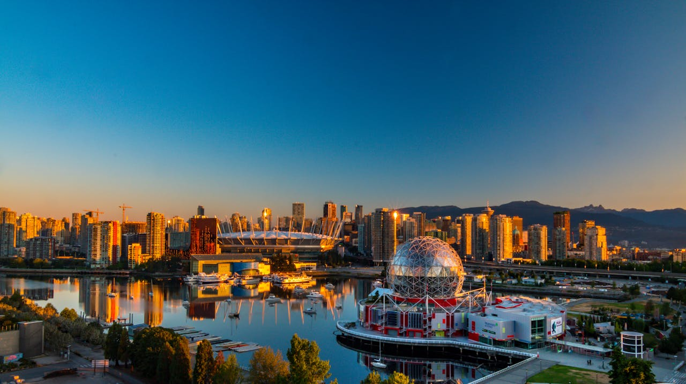
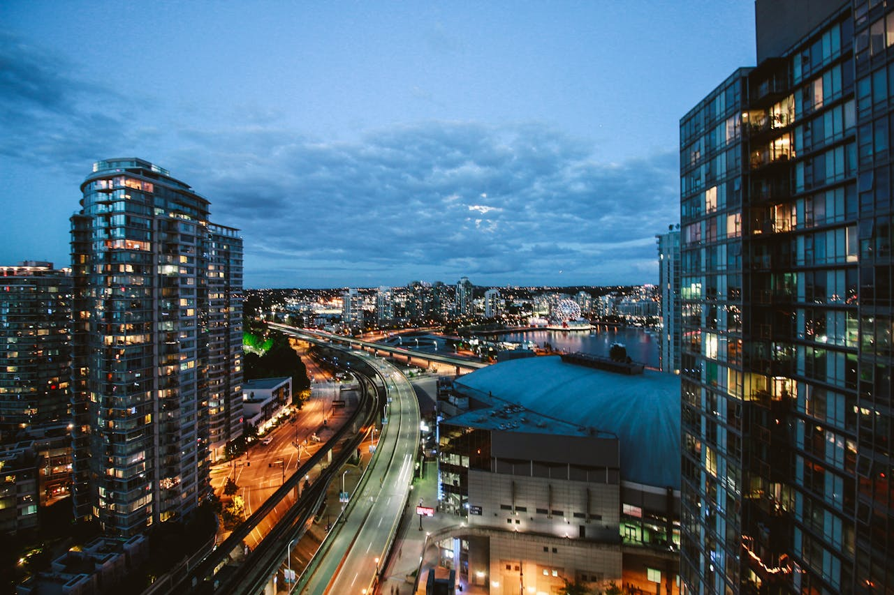

Abaixo apresento uma seleção de oito fotos de Vancouver, uma cidade localizada na província de British
Columbia, no Canadá. Na minha opinião, Vancouver é uma das cidades mais lindas do mundo, conhecida por suas
paisagens deslumbrantes e qualidade de vida excepcional.

Skyline de Vancouver com a cúpula da Science World ao entardecer.

Vista noturna dos prédios iluminados no centro de Vancouver.Ponte Lions Gate atravessando o Stanley Park em direção a North Vancouver.Pessoas caminhando pelo calçadão à beira de False Creek, rodeado de arranha-céus.
Pessoa apreciando o pôr do sol na praia de English Bay, com barcos ao fundo.
Science World iluminada refletindo nas águas de False Creek.Vista noturna da Ponte Granville Street e do bairro de Yaletown.Pessoa observando as montanhas cobertas de neve ao norte de Vancouver.